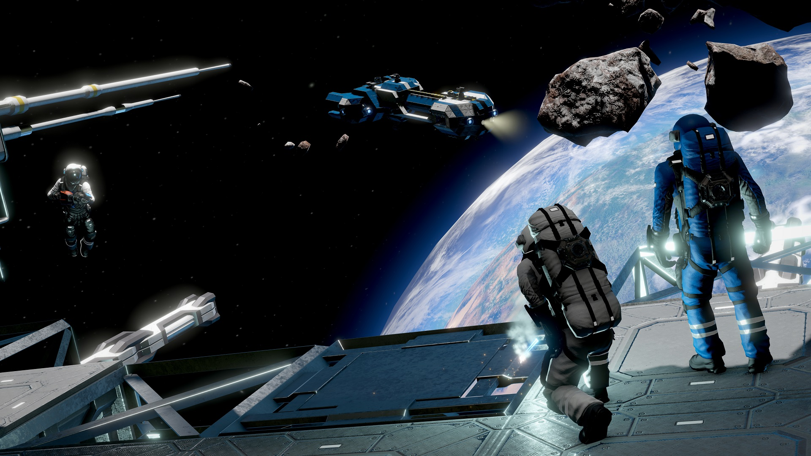

This is a page about some of the best xbox games that I have played. I chose these games based on how many times I have replayed them. I have rated them in order from number 1 as the best and 10 as the worst.

| Title | Developers | Date |
|---|---|---|
| Space Engineers | Keen Software House | 10/23/2013 |
| The Division | Massive Entertainment | 03/08/2016 |
| The Division 2 | Massive Entertainment | 03/12/2019 |
| Halo Master Chief Collection | 343 Industries | 11/11/2014 |
| Skyrim | Bethesda Game Studios | 11/11/2011 |
| Dead Space 2 | Visceral Games | 01/25/2011 |
| Crysis 2 | Crytec | 03/22/2011 |
| Gears of War 2 | Epic Games | 11/07/2008 |
| Tomb Raider | Crystal Dynamics | 03/05/2013 |
| Shadow of the Tomb Raider | Eidos-Montreal | 09/12/2018 |
The reason that I have chosen these games and not some of the newer releases is that most of the games on this list are what got me into playing video games. Lets take the games Halo and Crysis 2, they were the first xbox games I had ever played which is a big reason that they are on the list. Then there is the Tom Clancy series of the Division 1 & 2 which have one of the best storylines that will drag you in to the point of needing to find out what happens next as the basic storyline came pretty close to real life with covid-19. The Dead Space trilogy also had a great storyline, the only downside wass that the third game ended on a massive cliff hanger as they were planing for a fourth game wich was sadly canceled. and these were just some of the games on the list, True Achievements is a website where you can find every xbox game ever made.